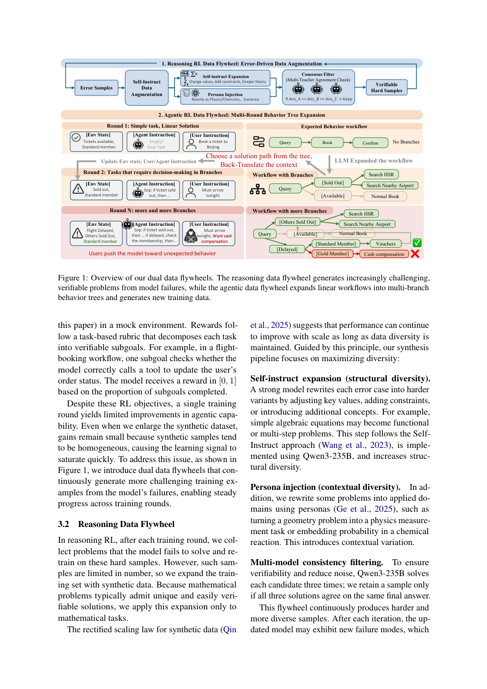

#1
★ 8/10
AgenticQwen: Training Small Agentic Language Models with Dual Data Flywheels for Industrial-Scale Tool Use
AgenticQwen：用双数据飞轮训练小型智能体语言模型以支持工业级工具使用

图 Figure · Page 3 of paper
🎯 双飞轮强化学习让小模型高效掌握多步工具调用能力
Dual data flywheels with RL train small models to match large ones on agentic tool-use tasks.
| 维度 | 中文 | English |
|---|---|---|
| ❓ 待解决 的问题 |
现实工业场景需要语言模型像智能体一样，能够进行多步推理并调用外部工具（如搜索、数据分析）。但大型模型成本高、延迟大，在工业部署中受限；而小模型在复杂任务上表现往往不足。如何让小模型也能胜任高难度的多步工具使用任务，是当前的核心挑战。 | Real-world industrial applications need language models that can reason across multiple steps and call external tools like search engines or data analysis APIs. Large models are too expensive and slow for production use, but small models struggle with complex agentic tasks. The challenge is closing this performance gap for small models under cost and latency constraints. |
| 💡 解决 的亮点 |
• **双数据飞轮机制**：推理飞轮从模型错误中自动生成更难的训练样本；智能体飞轮将线性工作流扩展为多分支行为树，模拟真实复杂决策场景。 • **推理RL + 智能体RL联合训练**：两阶段强化学习分别强化模型的推理能力和工具调用规划能力，互相增强。 • **合成数据与开源数据结合**：仅用少量开源数据配合大规模合成数据，显著降低数据获取成本，同时保持泛化性。 | • **Dual Data Flywheels**: A reasoning flywheel that mines hard examples from model errors, and an agentic flywheel that expands linear workflows into multi-branch behavior trees mimicking real-world decision complexity. • **Two-Stage RL Training**: Reasoning RL and agentic RL are combined in a multi-round framework, each reinforcing different competencies — logical inference and multi-step tool planning. • **Synthetic-First Data Strategy**: Training relies heavily on automatically generated synthetic data with only a small amount of open-source data, drastically reducing data collection overhead. |
| 🧪 实验 内容 |
实验在多个公开智能体基准和工业内部系统上进行，基线涵盖同规模及更大规模的主流语言模型。公开基准包括工具调用、多步推理等智能体任务评测集；工业实验则在搜索和数据分析两类真实任务上，将 AgenticQwen 与更大规模模型对比，评估任务完成质量与效率。 | Experiments were conducted on multiple public agentic benchmarks covering tool use and multi-step reasoning tasks, with baselines including both same-scale and much larger language models. Additionally, the models were evaluated in a real industrial agent system on search and data analysis tasks, measuring task completion quality against larger proprietary and open models under production conditions. |
| 📊 实验 结果 |
AgenticQwen 在多个公开智能体基准上取得强劲表现，具体数值据论文报告优于同规模模型；在工业智能体系统中，AgenticQwen 在搜索和数据分析任务上显著缩小了与更大规模模型之间的差距，以小模型成本接近大模型效果。模型检查点和合成数据已开源（HuggingFace），代码已集成到 EasyDistill 框架。 | AgenticQwen achieves strong results across multiple public agentic benchmarks, outperforming models of comparable size. In the industrial agent system, AgenticQwen closes the performance gap with significantly larger models on both search and data analysis tasks — delivering near-large-model quality at small-model cost. Exact benchmark scores, model checkpoints, and part of the synthetic data are publicly released on HuggingFace; training code is available on GitHub and integrated into EasyDistill. |
| 🏁 结论 | 本文证明了通过双数据飞轮结合两阶段强化学习，可以高效训练出在多步工具使用任务上接近大型模型表现的小型智能体语言模型。AgenticQwen 为工业级智能体部署提供了一条低成本、可扩展的训练路径，并通过开源推动了该领域的可复现研究。 | This paper demonstrates that small language models trained with dual data flywheels and multi-round RL can match much larger models on complex agentic tool-use tasks. AgenticQwen provides a cost-effective, scalable training paradigm for industrial-grade agent deployment, with full open-source release enabling reproducible research. |
| 🔗 论文 链接 |
arXiv: 2604.21590v1 · 📥 PDF | |
⚙️ Method · 方法详解
AgenticQwen 的训练框架分为两个相互配合的强化学习阶段。首先是推理RL阶段：从模型推理错误中挖掘难例，自动构造更具挑战性的训练数据（推理飞轮），让模型在迭代中不断提升推理能力。其次是智能体RL阶段：智能体飞轮将简单的线性工具调用流程扩展为具有多分支条件判断的行为树，模拟真实场景中的复杂决策路径，并以此生成合成训练任务。两个飞轮自动迭代生成越来越难的任务，形成持续自我改进的训练循环，最终使小型模型（如Qwen系列）在工具使用上媲美大型模型。
AgenticQwen uses a two-phase training framework built around reinforcement learning. In the first phase (Reasoning RL), a reasoning flywheel identifies examples where the model makes mistakes and generates progressively harder training data from those errors, iteratively improving logical reasoning. In the second phase (Agentic RL), an agentic flywheel converts simple linear tool-call sequences into multi-branch behavior trees that capture the conditional complexity of real-world agent workflows, producing rich synthetic training tasks. Both flywheels operate automatically and continuously, creating a self-improving data loop. The resulting model family (AgenticQwen) is trained on Qwen base checkpoints using this combined synthetic + limited open-source data pipeline.
📐 Key Formulas · 关键公式
\[\mathcal{D}_{t+1} = \mathcal{D}_t \cup \{x \mid x \in \text{ErrorSet}(\pi_t)\}\]
💡 推理飞轮的核心逻辑：下一轮训练数据集由当前数据集加上当前策略模型出错的样本构成，从错误中持续挖掘难例。
The reasoning flywheel's core idea: the next training dataset is the current dataset augmented with examples where the current policy model made errors, continuously mining hard cases from failures.
\[\mathcal{T}_{\text{branch}} = \text{Expand}(\mathcal{T}_{\text{linear}}, \mathcal{C})\]
💡 智能体飞轮的扩展操作：将线性工具调用流程 T_linear 在条件集合 C 下扩展为多分支行为树 T_branch，模拟真实决策复杂度。
The agentic flywheel's expansion: a linear tool-call workflow T_linear is expanded under condition set C into a multi-branch behavior tree T_branch, simulating real-world decision complexity.
🌟 Why It Matters · 为什么重要
在工业部署中，大型模型的推理成本和延迟往往是瓶颈，本文提供了一套系统性方法让小模型具备大模型的智能体能力，直接降低了落地门槛。双飞轮自动数据生成机制为未来智能体训练提供了可复用的范式，有望推动更广泛的自主AI应用。
For the AI field, this work shows a principled path to making small models viable for production agentic systems, dramatically reducing inference cost without sacrificing capability. The dual flywheel data synthesis paradigm is a reusable framework that could accelerate the development of autonomous AI agents across diverse domains.